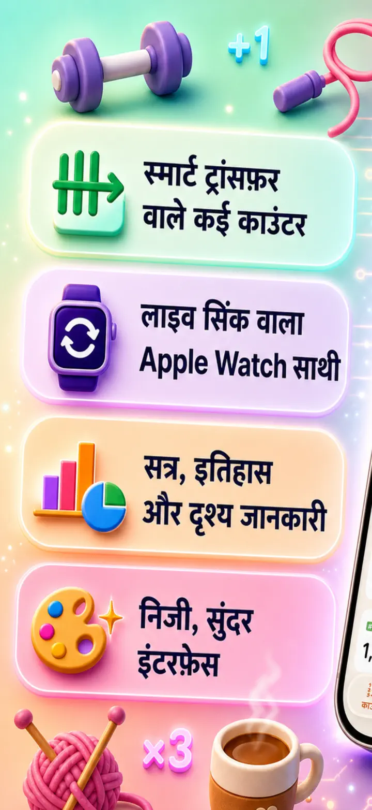
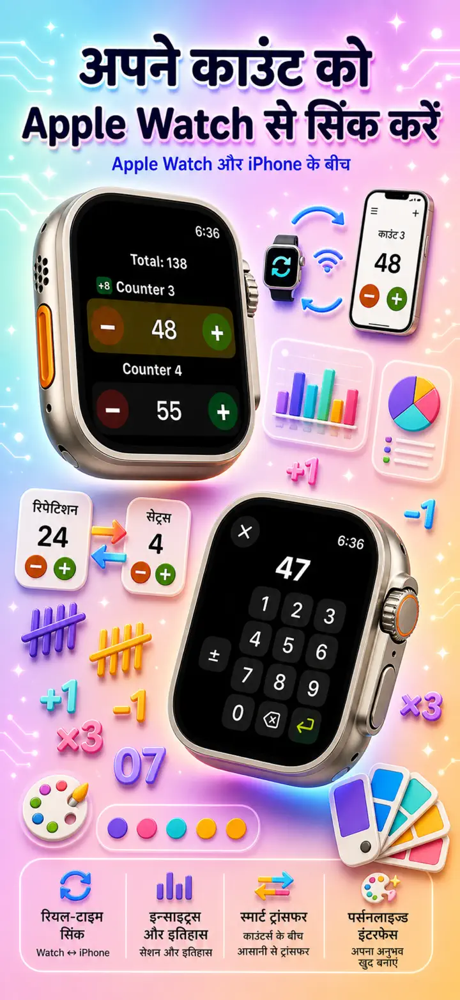
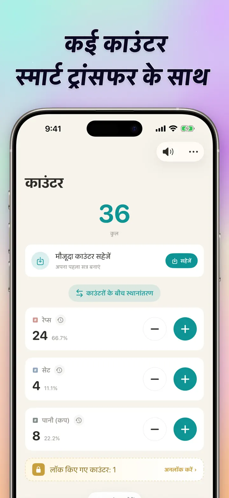
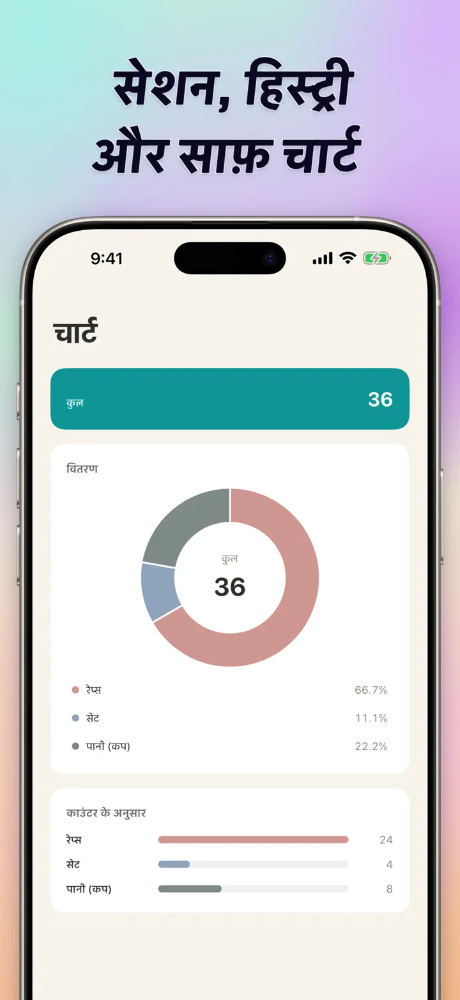
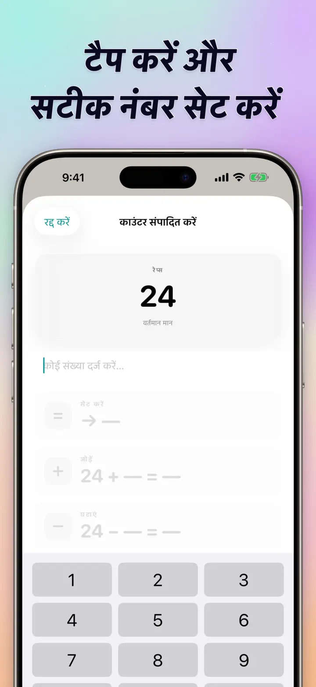
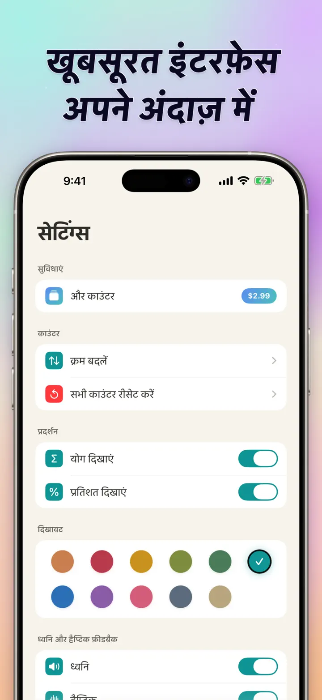
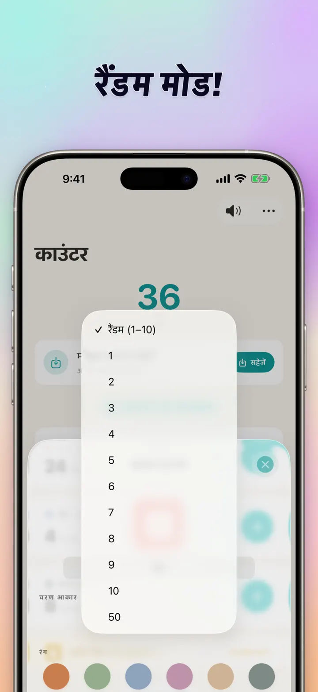

काउंटर 123
Watch सिंक, क्लिकर, स्कोर
नया: होम स्क्रीन विजेट — ऐप खोले बिना विजेट पर ही +/- टैप करें। काउंटर व क्लिकर, Apple Watch सिंक, रैंडम मोड, ग्राफ और हिस्ट्री।
App Store से डाउनलोड करें
ऐप के बारे में
काउंटर 123 iPhone, iPad और Apple Watch के लिए तेज़ और लचीला काउंटर है। हर काउंटर को नाम दो, रंग चुनो और कुछ भी गिनो — जिम के सेट्स, बुनाई की पंक्तियाँ, माला, क्लास के अंक, स्टॉक, गेम स्कोर। सारा डेटा डिवाइस पर लोकल रहता है, ऑफलाइन काम करता है।
कस्टम काउंटर
- गतिविधियों, गेम, रूटीन या सूचियों के लिए अलग-अलग काउंटर बनाएं
- हर काउंटर के लिए अलग नाम और रंग
- क्रम बदलने के लिए ड्रैग करो
- तेज़ी से लगातार गिनने के लिए दबाकर रखो
- पूरी तरह ऑफलाइन — कोई रजिस्ट्रेशन नहीं, कोई क्लाउड नहीं
डायरेक्ट एंट्री और बल्क ऑपरेशन
- काउंटर पर टैप करके सीधे शुरुआती वैल्यू सेट करो — शून्य से शुरू करने की ज़रूरत नहीं
- बल्क +/-: किसी भी नंबर से काउंटर एक टैप में बदलो
- ट्रांसफर: एक काउंटर से दूसरे में वैल्यू भेजो, डबल ऑपरेशन की ज़रूरत नहीं
- कस्टम स्टेप: एक टैप से 1, 5, 10, 100 या कोई भी नंबर जोड़ो
- हर बदलाव का लाइव प्रीव्यू
रैंडम मोड
- हर टैप पर काउंटर 1 से 10 तक नई वैल्यू चुन सकता है
- + और - बटन से रैंडम वैल्यू जोड़ें या घटाएं
- ड्रिल, गेम, रिवार्ड, क्लास एक्टिविटी और अभ्यास के लिए उपयोगी
- हर रैंडम टैप काउंटर की हिस्ट्री में रिकॉर्ड होता है
टोटल और ग्राफ
- सारे काउंटरों का कुल योग एक नज़र में
- प्रतिशत व्यू: हर काउंटर का कुल में योगदान
- इंटरैक्टिव बार चार्ट — वैल्यू (#) और प्रतिशत (%) के बीच स्विच करो
- वैल्यू के हिसाब से तुरंत रैंकिंग
हिस्ट्री और शेयरिंग
- पूरी हिस्ट्री: हर जोड़, घटाव और बदलाव रिकॉर्ड
- काउंटर सेट सेव करो और कभी भी लोड करो
- कॉन्फ़िग टीम, स्टूडेंट्स या दोस्तों से शेयर करो
- हिस्ट्री को तारीख लॉग, ग्रुप्ड सेशन या दिन/हफ्ते/महीने के आँकड़ों में देखें
APPLE WATCH के साथ लाइव सिंक
- iPhone या Apple Watch पर काउंटर बदलें, दोनों साथ-साथ सिंक रहते हैं
- असली नेटिव watchOS ऐप — सिर्फ़ कम्पैनियन नहीं
- नाम, रंग और वैल्यू कलाई पर सिंक
- टैप करके गिनो, दबाकर रखो रिपीट के लिए — घड़ी से सीधे
- iPhone पास न हो तो भी अकेला काम करता है
iPhone, iPad और APPLE WATCH के लिए
- हर स्क्रीन साइज़ के लिए एडेप्टिव लेआउट
- iPad एक साथ ज़्यादा काउंटर दिखाता है, Split View सपोर्ट
- प्राइवेसी पहले: लोकल स्टोरेज, कोई क्लाउड नहीं, कोई अकाउंट नहीं
इनके लिए बढ़िया
- जिम के सेट और रेप्स
- बुनाई की पंक्तियाँ और क्रोशिया के टांके
- माला, तस्बीह, प्रार्थना मणियाँ
- क्लास में अंक और हाज़िरी
- क्रिकेट, हॉकी, फुटबॉल, कबड्डी — तेज़ स्कोर
- टेबल टेनिस
- स्टॉक और गोदाम की गिनती
- शतरंज, कार्ड, तीन पत्ती, लूडो
- पूल और ट्रैक के चक्कर
- पक्षी देखना
- इवेंट में लोगों की गिनती
- आदत और लक्ष्य ट्रैकिंग
काउंटर 123 डाउनलोड करो और हर गिनती आसान बनाओ — साफ़, तेज़, निजी।
गोपनीयता नीति: https://masawata.net/privacy-policy.html उपयोग की शर्तें: https://www.apple.com/legal/internet-services/itunes/dev/stdeula/
स्क्रीनशॉट






काउंटर 123
नया: होम स्क्रीन विजेट — ऐप खोले बिना विजेट पर ही +/- टैप करें। काउंटर व क्लिकर, Apple Watch सिंक, रैंडम मोड, ग्राफ और हिस्ट्री।
App Store से डाउनलोड करें